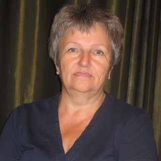
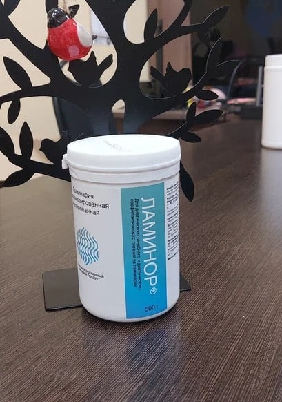
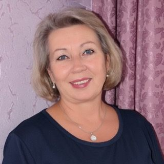
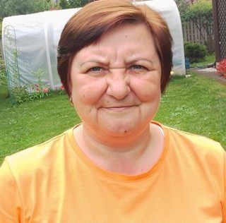
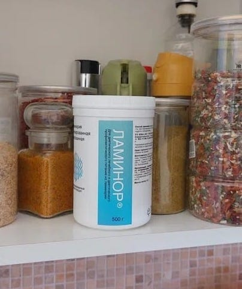
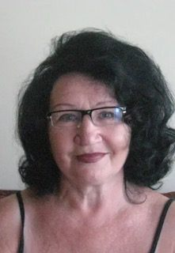
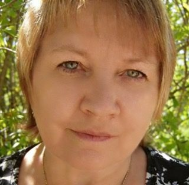
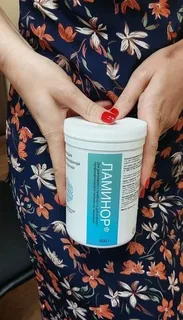
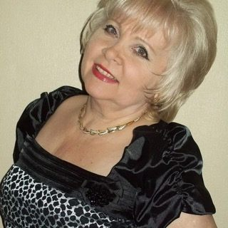

«Диетологлар: камроқ есанг — озасан, дейишади. Мен йиллар давомида шу қоидага амал қилдим. Аммо озмадим. Чунки ҳеч ким менга энг муҳим нарсани айтмади: ортиқча килограммларим ёғ эмас эди. Улар ифлосланган лимфа туфайли организмда тўпланган сув ва токсинлар эди.»
Чапда — вазним 92 кг эди. Ўнгда — 8 ҳафтадан кейин. Вазним 78 кг бўлди. Парҳезсиз ва оч қолмасдан.
Ассалому алайкум, азизларим. Бу ҳақда очиқ ёзишга журъат этаман деб ўйламаган эдим. Аммо дугоналарим ҳар куни «Бунга қандай эришдинг?» деб сўрашади. Шунинг учун ҳаммасини рост ва батафсил айтиб беришга қарор қилдим.
Мен 60 ёшдаман. Охирги саккиз йил давомида ҳеч камаймайдиган вазн билан курашдим. Парҳез қилдим, калорияларни санадим, турли қўшимчалар ичдим, ҳафтасига уч марта бассейнга бордим. Вазн эса жойидан жилмади. Кўпи билан 3–4 кг озардим, бир ойдан кейин эса улар яна «шериклари» билан қайтарди.
Бу шунчаки ёш, бунга кўникиш керак, деб ўйлай бошлагандим. Бир куни дугонамникига бориб, уни озган, тетик ва ҳаракатчан ҳолда кўрдим. Унинг гаплари бутун фикримни ўзгартирди.
Нега озиш усулларининг аксарияти 50 ёшдан кейин ишламайди?
Буни менга оддий ва тушунарли қилиб изоҳлашди. Одатда айтилмайдиган жараёнлар қуйидагилар:
- Лимфа тизими йиллар давомида ифлосланади — айниқса 50 ёшдан ошганларда. Лимфа нормал ҳаракатланмай қолади, токсинлар ва ортиқча суюқлик тўқималарда тўпланади.
- Шиш — ортиқча ёғ эмас. 50 ёшдан кейин аёллардаги 8–10 кг «ортиқча вазн» тўқималардаги суюқлик ва чиқиндилар бўлиши мумкин. Парҳез уларни йўқотмайди.
- Ифлосланган ичак озуқа моддаларини яхши ўзлаштирмайди, шу сабаб организм яна овқат талаб қилади. Бу ёпиқ доира.
- Моддалар алмашинувининг секинлашиши кўпинча фақат гормонларга эмас, токсик юкламага ҳам боғлиқ. Тоза лимфа — тез метаболизм.
- Лимфа турғун бўлса, спортзал ҳам ёрдам бермайди. Машқ қиласиз, вазн эса ўзгармайди. Менда ҳам шундай бўлган.
- Гормонлар ва токсинлар — тўпланган чиқиндилар гормонларнинг чиқарилишига халақит бериб, очликда ҳам кетмайдиган қорин пайдо бўлишига сабаб бўлади.
- Томирлар мўртлиги — 50 ёшдан кейин томирлар эластиклигини йўқотади, қуюқ қон ва лимфа юракка юкламани ошириб, нафас қисиши ва чарчоқни келтириб чиқаради.
Ортиқча килограммларим ёғ эмас эди. Улар организм чиқара олмаган сув ва токсинлар эди. Лимфа ишлай бошлагач, вазн ўз-ўзидан камайди.
Фикримни бутунлай ўзгартирган Галина Михайловнанинг ҳикояси
Галина — болаликдан дугонам, ҳозир 56 ёшда. Уни кўриб ҳайратда қолдим: қомати келишган, тетик, териси ёрқин. «Галя, қандай қилиб?!» деб сўрадим. У кулиб, ҳаммасини айтиб берди.
Бир йил олдин Галинанинг вазни 88 кг эди. Тиззалари оғрир, зинадан чиққанда нафаси қисар, кечга бориб оёқлари шишарди. Диетолог унга фақат «Озиш керак» деди. «Қандай?» деган саволга эса одатий жавоб: камроқ еб, кўпроқ ҳаракатланиш. Галина синаб кўрди, аммо ҳеч нарса ўзгармади.
Кейин у интернетда лимфа тизимининг ортиқча вазн билан боғлиқлиги ҳақида мақола ўқиб, Ламинор лимфа-гелини топди.
Галянинг ўзгаришдан кейинги сурати:
У қандай ишлайди
Ламинор — ламинария ва фукуснинг табиий асосидаги махсус лимфа-гель. Унинг таркибида 100 дан ортиқ фаол компонент: энтеро- ва лимфосорбентлар, маннит ҳамда витаминлар мажмуаси бор.
Таъсир механизми оддий: альгинатлар (табиий сорбент) лимфа ва ичакдаги токсинлар, чиқиндилар ҳамда ортиқча суюқликни ўзига тортади ва организмдан чиқаради. Ламинариядаги органик йод эса моддалар алмашинувини фаоллаштиради.
Лимфа тозалангач, организм сувни «захирага» ушлаб турмайди. Шишлар ва йиллар давомида ҳеч қандай парҳезга бўйсунмаган килограммлар табиий равишда камаяди.
Курс давомида организмда нималар юз беради:
- Шишлар камаяди — юз, қорин ва оёқларда лимфа ҳаракати яхшиланади
- Вазн камаяди — парҳез ва овқат чекловларисиз, тозаланиш ҳисобига
- Қорин кичраяди — кетмайдиган дам бўлиш йўқолади
- Тери яхшиланади — ранги текисланиб, хиралик кетади ва ёрқинлик пайдо бўлади
- Умумий аҳвол яхшиланади — организм токсинлардан тозаланиб, оғирлик ҳисси йўқолади
- Қувват қайтади — биринчи ҳафта охирига келиб чарчоқ ва уйқучанлик камаяди
- Ошқозон-ичак фаолияти яхшиланади — дам бўлиш ва оғирлик кетиб, ичак мунтазам ишлайди
- Уйқу яхшиланади — осон ухлаб, эрталаб тетик уйғонасиз
🌿
100% табиий таркиб
Ламинария, фукус ва табиий сорбентлар. Кимёвий ва синтетик моддаларсиз.
🔬
Клиник синовдан ўтган
Мутахассислар томонидан тавсия этилган.
⏱️
Биринчи натижа тезда
5–7 кундан кейин шишлар камайиб, танада енгиллик сезилади.
💊
Махсус озуқа
Дори эмас — даволаш-профилактик озуқа маҳсулоти.
Натижадан кўнгил қолмаслиги учун буни аввалдан тушуниш муҳим. Ламинор бир кечада ёғ ёқадиган «сеҳрли таблетка» эмас. Бу таъсири босқичма-босқич тўпланадиган чуқур тизимли тозаланишдир.
Лимфа ҳаракати яхшиланиб, ичак тозалангач, ёғ ҳужайралари парчалана бошлайди. 50 ёшдан кейин моддалар алмашинуви секинлашади ва организмга вақт керак бўлади. Шунинг учун вазн ва ҳажмдаги биринчи сезиларли ўзгаришлар иккинчи-учинчи ҳафтада пайдо бўлади.
Галина айтган натижалар: ҳафтама-ҳафта
Галина ҳаммасини батафсил айтиб берди, мен эса ёзиб олдим:
1–2
ҳафта
Ички тозаланиш бошланади
Аввало енгиллик сезилди. Доимий қорин дам бўлиши йўқолди, ҳазм яхшиланди. Юздаги шишсиз уйғона бошлади. Ортиқча суюқлик ҳисобига вазн 2 кг камайди.
3–4
ҳафта
Вазн сезиларли камая бошлади
Ой охирига келиб 5 кг камайди. Этиги яна сиғадиган бўлди. Ҳамкасблари уни дам олиб келган деб ўйлашди. Юрганда нафас қисиши анча камайди.
5–8
ҳафта
Ўзи ҳам ишонмаган натижа
Жами 14 кг камайди. Очликсиз ва калория санамасдан. Тери таранглашди, юз чизиқлари аниқлашди. Тизза оғриғи камайди.
−14 кг
Ламинорнинг 8 ҳафталик курсида
Парҳезсиз · Спортзалсиз · Фақат лимфани тозалаш
🔴 МАХСУС АКЦИЯ: Энг катта чегирма 21.06.2026 гача амал қилади · Миқдор чекланган
⚡ Шаҳрингизга етказиб бериш мавжуд
Махсус дастур
Получите Ламинор по специальной цене
— с максимальной скидкой
УЗНАТЬ СПЕЦИАЛЬНУЮ ЦЕНУ →
🚚 Тез етказиб бериш
🌿 Табиий таркиб
🔒 Расмий ишлаб чиқарувчи
Шахсий тажрибам — қандай қилиб синаб кўришга қарор қилдим
Галя билан учрашгандан кейин яна икки ҳафта ўйладим. Сўнг барибир буюртма бердим. Ростини айтсам, унчалик катта умид қилмадим — бунгача жуда кўп нарсани синаб кўргандим.
Биринчи ҳафтада деярли ҳеч нарса сезмадим. Фақат кечга бориб қорним аввалгидек дам бўлмай қолди. Саккизинчи куни эрталаб уйғонсам, бир неча йилдан бери биринчи марта кўз остимда халталар йўқ эди.
Иккинчи ҳафта охирида қизим: «Ойи, оздингизми?» деб сўради. Тарозига чиқдим — 4 кг камайибди. Овқатланишимни ўзгартирмаган эдим.
Саккизинчи ҳафта охирида 14 кг оздим. Истаган нарсамни едим. Лимфа ниҳоят тўғри ишлай бошлади ва организм йиллар давомида тўпланган ортиқча нарсаларни чиқара бошлади.
Нутрициолог ва детоксикация мутахассиси шарҳи
Клиник диетолог, 18 йиллик тажриба
«50 ёшдан кейин аёллардаги “ортиқча вазн”нинг катта қисми ёғ тўқимаси эмас, балки лимфа тизими чиқаришга улгурмаган суюқлик ва метаболизм маҳсулотларидир. Сув ўтларининг табиий альгинатлари самарали табиий лимфодренаж воситаларидан бири ҳисобланади.»
⚡ Махсус акция: энг катта чегирма 21.06.2026 гача амал қилади · Буюртма беришга улгуринг
🚚 Шаҳрингизга тез ва қулай етказиб бериш
Фақат ҳозир — махсус дастур
Ламинорни махсус нархда буюртма қилинг
ва биринчи ҳафтадан чуқур тозаланишни бошланг
ЭНГ КАТТА ЧЕГИРМАНИ ОЛИШ →
✅ Расмий сайт
🌿 100% табиий
📦 Етказиб бериш хизмати
* Махсус дастур акция доирасида амал қилади. Нарх ва мавжудликни ишлаб чиқарувчи сайтидан аниқланг.
Ўқувчилар изоҳлари (16):

Наташенька, сиздан жуда миннатдорман! Ҳикоянгизни кўз ёш билан ўқидим — худди менинг ҳаётим. Ўттиз йил парҳез қилиб, натижа кўрмадим. Ламинорни олдим. Учинчи ҳафтадаёқ 5 кг оздим, оёқларимнинг шиши тўхтади!


Шишлар ҳақидаги гаплар рост экан. Бир ой Ламинор қабул қилгач 7 кг оздим, шишлар кетди, қорним текисланди. Энди суратга фильтрсиз тушяпман!

Бу ёшимда озиш мумкинлигига ишонмасдим. Тўлиқ курсни синаб кўрдим — 11 кг оздим! Шишлар кетди, бўғимларим ҳам камроқ оғрийди.


10 йил вазн ва шишлардан қийналдим. Ламинордан кейин сабаб лимфада эканини тушундим. 8 ҳафтада 13 кг оздим, юзимдаги шиш ва тизза оғриғи анча камайди.

Вазним ҳеч камаймасди. Мақоладан кейин Ламинорни олдим. Уч ҳафтада 6 кг оздим ва организмим «уйғонгандек» бўлди. Енгиллик пайдо бўлди, терим таранглашди.


Наталья, сиздан жуда миннатдорман. Бир ярим йил фитнесга бориб, бир килограмм ҳам озмадим. Ламинорни синаб кўрдим — икки ойда 9 кг оздим, машқлар ҳам самара бера бошлади!